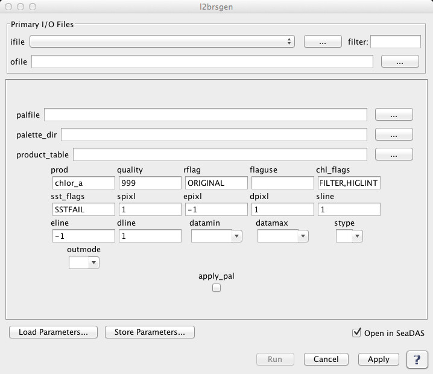

| l2brsgen | |
Creates a Level 2 Browse file.
Location
Details
Command Line Usage
Tools -> OCSSW Processing -> l2brsgen
<l2brsgen takes a product from a L2 file, subsamples the file and writes a browse file.
|  |
| UI Element Name | Type | Description | Required/Optional | Default Value |
| ifile | Text Field | Input L1 file name. Please provide the full path name when manually enter the file name. | Required | |
| ofile | Text Field | Output filename for generated browse file. Please provide the full path name when manually enter the file name. | Required | |
| quality | int | highest quality value acceptable | Optional | 999 |
| rflag | Text Field | replacement flag | Optional | ORIGINAL |
| rflaguse | Text Field | Flags used to mask data | Optional | |
| chl_flags | Text Field | Flags used to mask data for chl product if flaguse not set | Optional | ATMFAIL,HILT,STRAYLIGHT,CLDICE,LOWLW,CHLWARN,CHLFAIL,NAVWARN,MAXAERITER,NAVFAIL,FILTER,HIGLINT |
| sst_flags | Text Field | Flags used to mask data for sst product if flaguse not set | Optional | SSTFAIL |
| spixl | int | start pixel number | Optional | 1 |
| epixl | int | end pixel number (-1=the last pixel) | Optional | -1 |
| dpixl | int | pixel subsampling interval | Optional | 1 |
| sline | int | start line number | Optional | 1 |
| eline | int | end line number(-1=the last line) | Optional | -1 |
| dline | int | line subsampling interval | Optional | 1 |
| apply_pal | boolean | apply color palette, grayscale is used when apply_pal is left unchecked | Optional | no |
| palfile | input file | palette filename. "default" means the palette is chosen using the product table file. The value of this field is used when apply_pal is checked. | optional | default |
| palette_dir | input file | directory containing the palette files | Optional | $OCDATAROOT/common/palette |
| product_table | input file | product table | Optional | $OCDATAROOT/common/l2brsgen_product_table.dat |
| datamin | float | minimum value for data scaling. | Optional | 0.0 or derived from the default product_table.dat |
| datamax | float | maximum value for data scaling | Optional | 0.0 or derived from the default product_table.dat |
| stype | int | scaling type:
1: linear
2: log
|
Optional | 0 |
| outmode | int | defines output format:
0: HDF browse file
1: PPM color or PGM grayscale image file
2: PNG color or grayscale image file
|
Optional | 0 |
| UI Element Name | Type | Description |
| Browser Button | Button | Selects infile/ofile |
| Load Parameters ... | Button | Reads in previously saved parameters and populates the fields in GUI. |
| Save Parameters ... | Button | Saves the current arguments in GUI in a file. |
| Run | Button | Executes the l2brsgen command with arguments provided in the UI. |
| Cancel | Button | Closes current processor GUI. |
| Apply | Button | Makes current arguments effective. |
| Open in SeaDAS | Checkbox | If selected, the ofile will be added to the open products list right after its generation. |
| ? | Button | Displays the help content of the current command. |
Usage: l2brsgen argument-list
This program takes a product from a L2 file, subsamples the file
and writes a browse file
The argument-list is a set of keyword=value pairs. The arguments can
be specified on the commandline, or put into a parameter file, or the
two methods can be used together, with commandline over-riding.
The list of valid keywords follows:
-help (boolean) (alias=-h,--help) (default=false) = print usage information
-version (boolean) (alias=--version) (default=false) = print the version
information
-dump_options (boolean) (alias=--dump_options) (default=false) = print
information about each option
-dump_options_paramfile (ofile) (alias=--dump_options_paramfile) = print
information about each option to paramfile
-dump_options_xmlfile (ofile) (alias=--dump_options_xmlfile) = print
information about each option to XML file
par (string) = input parameter file
ifile (ifile) = input L2 file name
ofile (ofile) (default=output) = output filename
prod (string) (default=chlor_a) = product name
quality (int) (default=999) = highest quality value acceptable
rflag (string) (default=ORIGINAL) = replacement flag
flaguse (string) = Flags used to mask data
chl_flags (string) (default=ATMFAIL,HILT,STRAYLIGHT,CLDICE,LOWLW,CHLWARN,CHLFAIL,NAVWARN,MAXAERITER,NAVFAIL,FILTER,HIGLINT) = Flags used to mask data for chl product if flaguse not set
sst_flags (string) (default=SSTFAIL) = Flags used to mask data for sst product if flaguse not set
spixl (int) (default=1) = start pixel number
epixl (int) (default=-1) = end pixel number (-1=the last pixel)
dpixl (int) (default=1) = pixel subsampling interval
sline (int) (default=1) = start line number
eline (int) (default=-1) = end line number (-1=the last line)
dline (int) (default=1) = line subsampling interval
apply_pal (boolean) (default=no) = apply color palette, false = grayscale
palfile (ifile) (default=default) = palette filename. "default" means the
palette is chosen using the product table file
palette_dir (ifile) (default=$OCDATAROOT/common/palette) = directory
containing the palette files
product_table (ifile) (default=$OCDATAROOT/common/l2brsgen_product_table.dat) = product table
datamin (float) (default=0.0) = minimum value for data scaling
(default: see product_table)
datamax (float) (default=0.0) = maximum value for data scaling
(default: see product_table)
stype (int) (default=0) = scaling type: 1=LINEAR; 2=LOG;
(default: see product_table)
outmode (int) (default=0) = format of the output file
0: HDF browse file
1: PPM color or PGM grayscale image file
2: PNG color or grayscale image file